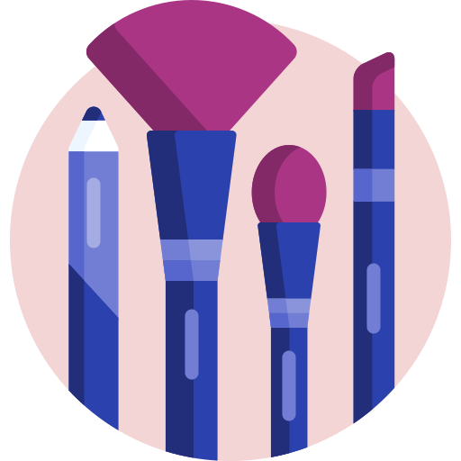
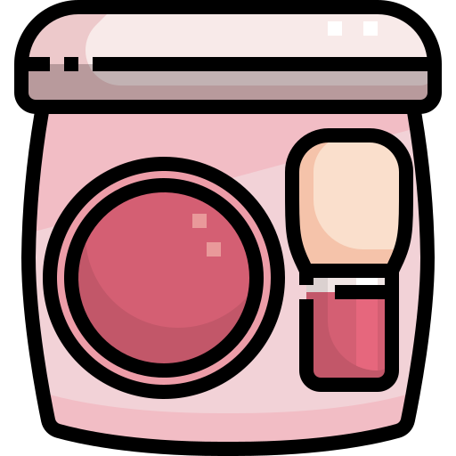

Apresentação
Por: Emanuele Reis
Olá, pessoal! Como alguém que ama o universo da beleza, preparei um breve resumo explicando as 4 maquiagens essenciais para quem quer começar a se maquiar. Espero que gostem!
Por: Emanuele Reis
Olá, pessoal! Como alguém que ama o universo da beleza, preparei um breve resumo explicando as 4 maquiagens essenciais para quem quer começar a se maquiar. Espero que gostem!

O que ela faz? e como escolher?
Uniformiza o tom da pele e disfarça manchinhas, criando uma camada uniforme. Mantenha a atenção ao seu tipo de pele (seca, mista ou oleosa) para decidir entre o acabamento matte (sequinho) ou glow (iluminado).
O que ele faz? Como escolher?
Traz cor, destaque e personalidade aos lábios. Varia desde um gloss leve para o dia a dia até um batom em bastão ou líquido de longa duração para um evento.

O que faz? Como escolher?
Devolve o rubor natural da pele e dá aquele aspecto corado e saudável. Opte pela versão em pó para facilitar a aplicação ou em creme/líquido para um efeito mais natural.
O que faz? Como escolher?
Destaca os olhos, dando a impressão de cílios mais longos, curvados e volumosos. Fique de olho no formato do aplicador — cerdas mais cheias dão volume, enquanto as mais finas ajudam no alongamento.